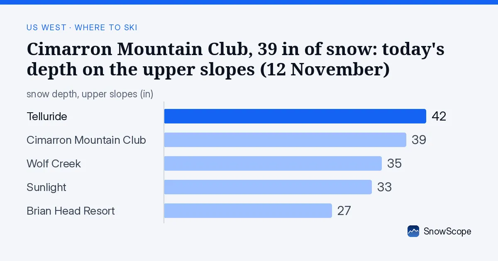

Cimarron Mountain Club, 39 in of snow: today's depth on the upper slopes (12 November)
42 in (106 cm): that is the snow on the upper slopes of Telluride today. Deepest snow in the US West today: Telluride, about 42 in (106 cm) on the upper slopes (model). Second Cimarron Mountain Club, 39 in (98 cm); third Wolf Creek, 35 in (88 cm). Snow-covered ground in the US West: 57,757 sq mi (149,590 km²). Resorts with snow: 132 of 195. The model is right more often than a hunch, and less often than we would like.
See the live snow forecast for Cimarron Mountain Club in the SnowScope appSnow depth, powder alerts and the 3D map, free.
Today's snow map
Snow-covered area: 64,850 sq mi (167,960 km²) on 10 November, 57,757 sq mi (149,590 km²) today, 69,201 sq mi (179,230 km²) forecast for 15 November. The map is getting less white.
Telluride by height, from our model: top 38 in (96 cm) (12,507 ft / 3,812 m), middle 2 in (6 cm) (10,620 ft / 3,237 m), base 0 in (0 cm) (8,734 ft / 2,662 m).
| Resort | Snow depth | New snow, 72 h | Coming, next days | Top |
|---|---|---|---|---|
| Telluride | 42 in (106 cm) | 0 in (0 cm) | 5 in (13 cm) | 12,507 ft (3,812 m) |
| Cimarron Mountain Club | 39 in (98 cm) | 0 in (0 cm) | 3 in (7 cm) | 11,355 ft (3,461 m) |
| Wolf Creek | 35 in (88 cm) | 0 in (0 cm) | 4 in (11 cm) | 11,762 ft (3,585 m) |
| Sunlight | 33 in (84 cm) | 0 in (0 cm) | 1 in (3 cm) | 9,849 ft (3,002 m) |
| Brian Head Resort | 27 in (68 cm) | 0 in (0 cm) | 6 in (16 cm) | 10,909 ft (3,325 m) |

Rain up to the top?
On Thursday 12 November the freezing level climbs to about 13,320 ft (4,060 m), above the top of the lifts at 11,355 ft (3,461 m): rain can fall even at the top.
Rain on fresh snow makes it heavy and, after a cold night, icy: the days after are better for groomed runs than for powder.
At about 10,584 ft (3,226 m), Cimarron Mountain Club has 3 in (8 cm) today; a normal 12 November has 7 in (19 cm) there.
Only one winter in ten has more than 24 in (60 cm) on this date.
A week ago the same spot had 5 in (12 cm).
In past winters the best snow at Cimarron Mountain Club usually came mid-March / late March.
Day by day at Cimarron Mountain Club: Saturday 14 November 2 in (6 cm); Sunday 15 November 0 in (1 cm).
Height by height at Cimarron Mountain Club: 9,813 ft (2,991 m) 0 in (0 cm) on the ground, 5 in (12 cm) more in the next 7 days; 10,584 ft (3,226 m) 2 in (6 cm) on the ground, 5 in (13 cm) more in the next 7 days; 11,355 ft (3,461 m) 9 in (24 cm) on the ground, 6 in (14 cm) more in the next 7 days.
Station check
The Beartown station (11,581 ft / 3,530 m) adds a real measurement: 30 in (76 cm) on the ground on 10 November. Ground check, Rat Creek station (11,680 ft / 3,560 m): 23 in (58 cm) on the ground on 10 November, 1 in (3 cm) new in 24 hours. Ground check, Red Mountain Pass station (11,060 ft / 3,371 m): 23 in (58 cm) on the ground on 10 November.
Resort values: modelled, area-wide. Station values: measured, one point. Read them together.
Is this normal?
Wolf Creek, 11,010 ft (3,356 m): 26 in (65 cm) today. That beats this date in 31 of the past 46 winters (usual: 9 in (23 cm)). A good start.
The forecast in short
Forecast to 15 November: 6 in (16 cm) at Brian Head Resort, 5 in (13 cm) at Telluride and 4 in (11 cm) at Wolf Creek. Treat the later days with care.
On 12 November the freezing level at Telluride sits at 10,039 ft (3,060 m) to 13,123 ft (4,000 m), over the top of the resort (12,507 ft / 3,812 m): rain or wet snow could fall on all slopes.
Forecasts a few days ahead can change: look at the map again the day before you travel.
Tips for skiers
- Snow on the map does not mean a resort is open: check lifts and opening dates on the resort's website.
- Early-season snow is thin. Stay on open, groomed pistes: rocks and grass can hide just under the surface.
- South-facing slopes take the most sun and melt first; high, north-facing slopes keep their snow the longest.
- Before you ski off-piste or go touring, read the official avalanche bulletin (links below).
- Get a powder alert in the SnowScope app to know when Telluride gets fresh snow.
About these numbers
Resort snow depths are the deepest snow on the resort's upper slopes from the SnowScope snow model (about 1 km, run of 12 November); they are estimates for an area, not a measurement at one point. Station values are measurements on the date shown. Forecasts can change. Always read the official avalanche bulletin before going off-piste.
Official avalanche bulletins: Colorado Avalanche Information Center
Cite this report
For research, teaching or the press: the numbers and charts are free to reuse under CC BY 4.0 with this citation.
SnowScope (2026), Cimarron Mountain Club, 39 in of snow: today's depth on the upper slopes (12 November), https://snowscope.app/blog/en/2026/11/us-west-cimarron-mountain-club-snow-depth-today-12-november-2026.html, accessed 2026-11-12
SnowScope (Atlas Labs). (2026, November 12). Cimarron Mountain Club, 39 in of snow: today's depth on the upper slopes (12 November). SnowScope snow reports. https://snowscope.app/blog/en/2026/11/us-west-cimarron-mountain-club-snow-depth-today-12-november-2026.html
BibTeX
@misc{snowscope2026uswestcimarronmountaincl,
author = {{SnowScope (Atlas Labs)}},
title = {Cimarron Mountain Club, 39 in of snow: today's depth on the upper slopes (12 November)},
year = {2026},
month = nov,
howpublished = {\url{https://snowscope.app/blog/en/2026/11/us-west-cimarron-mountain-club-snow-depth-today-12-november-2026.html}},
note = {Published 2026-11-12 15:13 UTC; accessed 2026-11-12}
}· CC BY 4.0 · Methods, data and tools →
Cimarron Mountain Club: snow and temperature by height, this winter vs last (tools) →
Follow Cimarron Mountain Club
Free: a message when fresh snow is coming, and the forecast every morning.
More snow reports

Telluride holds 115 cm (45 in) on 8 November. The freezing level climbs to 4,280 m (14,042 ft) on 9 November, bringing rain-on-snow risk to the highest slopes.

Steamboat, Colorado, for families: what works for toddlers, school-age kids, teens and parents, with the snow of 46 past winters at three heights.

How to spend a first day at Park City Mountain, Utah, and when to go: our snow history gives about 71 in (180 cm) at the usual mid-mountain peak over 46 past winters.